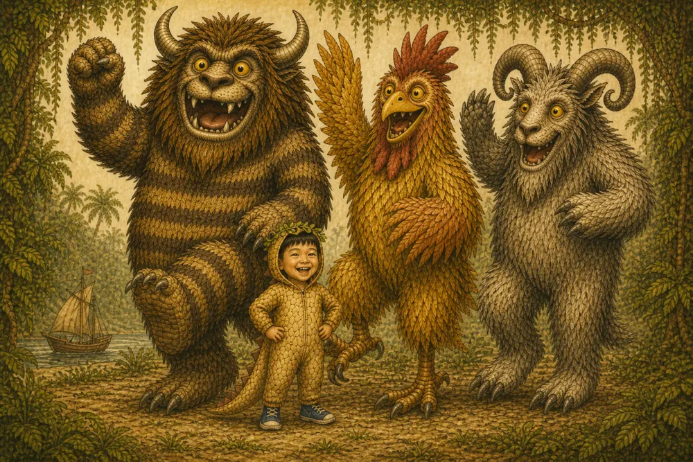

George and the Wild Parade
George and the Wild Things · George · Sylvia · Horn · Beak · Goat
ORT Level 6 · Living room · Jungle room · Wild parade
Narrator
George (boy)
Mummy
Sylvia
Daddy
Horn
Beak
Goat
New Words
Tap a card: hear the word, then an example sentence
Let's Check!
5 questions this time · Listen, then choose A, B or C
Key Phrases
Tap each phrase and say it with George
Follow-up Notes
For tutor / parent (saved on this device)
Learning focus
George 穿 T-rex 裝在客廳拿木叉追姐姐，被罰回房不准吃晚飯。房間長出叢林，Billy o' Tea 載他到野獸島。他拒退、對視馴服三獸，當王跳 wild parade、頒兩條王規後自願留冠回家，晚飯還熱。
- Story words: wild thing, jungle, stare, crown, parade, rule
- Home words: wooden fork, living room, supper, homeward
- Feeling: lonely, homesick, still hot
- Key phrases: Look at me. First royal rule. I choose home.
Tutor prompts
- 問：Mummy 為什麼罰 George？（客廳拿木叉追 Sylvia、太 wild）
- 問：George 怎樣進入野獸國？（對視、不逃、過藤橋）
- 問：George 當王時訂了什麼規矩？（大腳等小腳；吼完要鞠躬）
- 問：他為什麼想回家？（冠變重、肚子餓、聞到家中暖香）
- 問：王冠後來呢？（自願留給 Horn，沒帶回家）